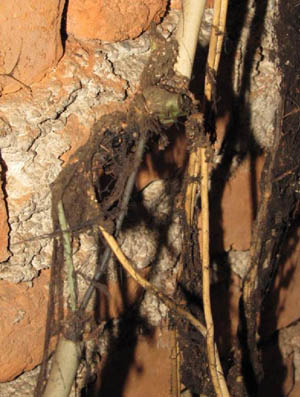

POŽARI V BIVALNEM OKOLJU
Požari v bivalnem okolju so posledica številnih okoliščin. Najpogostejši vzroki za požar v bivalnem okolju so človekova neprevidnost, malomarnost in nestrokovno ravnanje pri različnih opravilih posameznikov. Najpogostejši požari se zgodijo v bivalnem okolju, kar je tudi razumljivo, saj v njem človek preživi največ časa. Poleg tega so ti prostori najbolj izpostavljeni požarni nevarnosti, ki se v mrzlem zimskem času le še stopnjuje, predvsem zaradi večje uporabe grelnih naprav. Analize najpogostejših vzrokov požarov v bivalnem prostoru opozarjajo na to, da ti večinoma nastanejo takrat, ko človek pri delu doma uporablja nevarne snovi, pline, vnetljive tekočine ali aparate z električno napetostjo.
NAJPOGOSTEJŠI VZROKI POŽAROV V BIVALNEM OKOLJU
- Človekova malomarnost, neprevidnost in nestrokovno ravnanje.
- Nepazljivost pri uporabi električnih, plinskih in grelnih naprav (električnih blazin, kaloriferjev, likalnikov, peči …), njihova dotrajanost, poškodovanost in preobremenjenost.
- Kajenje.
- Kuhanje brez nadzora.
- Nepazljivost pri ravnanju z odprtim ognjem ali nevarnimi snovmi.
- Nepravilno odlaganje vročega pepela ali gorljivih materialov.
- Vžig saj, iskrenje in neustrezno tehnično stanje dimniških naprav.
- Okvara ali poškodba naprav, strojev, motorjev.
- Neustrezno tehnično stanje sredstev, prostorov, naprav, strojev.
- Vroča dela pri popravilih in vzdrževalnih delih – brušenje, varjenje, trenje, pregrevanje.
- Eksplozije plina.
- Nepravilno skladiščenje vnetljivih snovi.
- Naravne nesreče – strela in samovžig sena.
Pomembno je poznavanje preventivnih ukrepov, s katerimi lahko preprečimo nastanek požara in pravilno ravnamo, če zagori.
NASVETI, DA NE BI ZAGORELO
- Kletni in strešni prostori morajo biti pospravljeni, brez nepotrebnih stvari, kot so star papir, stari zvezki, stare igrače, krama in podobno.
- Poti za vstop in izstop na stopnišče morajo biti proste, brez ovir, kot so stoli, mize, regali, omare ali celo zaklenjena vrata z verigami, saj bi jih reševalne enote v primeru požara morale odstranjevati, kar pomeni izgubo časa.
- Okoli štedilnikov in peči naj ne bo odvečne krame, kot so različni spominski leseni predmeti, bombažne kuhinjske krpe, nogavice, obleke in drugo.
- Med kuhanjem se ne oddaljujte od štedilnika, priključen štedilnik ne sme biti brez nadzora. Pregreta maščoba se hitro vžge in tovrstnega požara se NIKOLI NE GASI Z VODO! Ogenj zadušimo s pokrovko ali mokro krpo ter izklopimo plin ali elektriko.
- Vključene grelne naprave (likalniki, peči, kaloriferji, svetilna telesa, predvsem žarnice z žarečo nitko …) in prižgane sveče, ki oddajo toploto, nikoli ne smejo biti brez nadzora. Sveče je treba vedno postaviti na negorljivo površino, stojijo naj pokončno, stabilno in ne na prepihu. V njihovo bližino se ne namešča pregrinjal, okenskih zaves, lesenih oblog in drugih gorljivih snovi (knjig, zvezkov, igrač, oblačil, papirja …), ker lahko hitro zagorijo.
- V električne omarice ne posegamo in počakamo na odraslega oziroma električarja.
- Poškodovane, dotrajane, preobremenjene in napačno uporabljene električne naprave in aparate, podaljške ali vtičnice se ne uporablja. Na to opozorimo odrasle, da jih je treba zamenjati z novimi.

- Novoletne luči ne nameščamo oziroma pritrjujemo na gorljive materiale – zavese, lesene obloge...
- Požara na električnih napravah in instalacijah se nikoli ne gasi z vodo!
Otroci ne smejo imeti virov vžiga (vžigalic, vžigalnika …) na dosegu rok.
- Kajenje v postelji ali na kavču je smrtno nevarno. Ko praznite pepelnik, se je treba prepričati, da so cigaretni ogorki ugasnjeni. Tleči cigaretni ogorki lahko zelo hitro povzročijo požar, paziti je treba, da jih ne odvržemo v gorljive posode ali v naravo.
- Goreča sveča ali odprti ogenj naj nikoli ne gorita brez nadzora, poleg tega morata biti vselej zunaj dosega otrok in domačih živali. Gorečo svečo se namesti na negorljivi podstavek, na svečnik ali v primerno posodo, stoji naj pokončno, ne smemo je premikati niti nositi po prostoru in nikoli je ne postavljamo na prepih, v bližino gorljivih snovi (zaves, papirja ipd.) in naprav, ki oddajajo toploto, kot so peči, električni aparati in podobno.
- Redna čiščenja, vzdrževanja in priključitve različnih kurilnih naprav, peči, dimnikov … prepustimo odraslim oziroma strokovnjakom.
- Vroč pepel se odlaga v negorljive posode in ne v plastične oziroma lesene posode.
- Otroci in mladoletni naj kamina ali peči ne prižigajo sami!
- Preden gremo spat, vedno ugasnemo televizijske in radijske sprejemnike in luči. Prepričamo se, ali so izklopljene grelne naprave na plin, tekoča goriva in elektrika. Ugasniti pa moramo tudi sveče in kamin.
- Če se vključi požarni javljalnik ali požarna sirena je treba takoj zapustiti prostor oziroma objekt.
- Požarno in eksplozivno nevarne snovi (lepila, čistila, laki, razredčila, premazi …) je treba hraniti na varnih mestih po navodilih proizvajalca. Snovi ne smejo biti v bližini vira toplote in dosegljive otrokom. Nevarne snovi oziroma njene prazne embalaže ter doze pod tlakom se nikoli ne sme odlagati v kurišča, saj eksplozija razmeče žerjavico daleč naokoli in povzroči nadaljnje širjene požara.
- Čiščenje in pranje oblačil z lahko vnetljivimi ali celo eksplozivnimi snovmi se ne opravlja v zaprtem prostoru ali ob toplotnem viru, saj lahko že drobna iskra povzroči vžig ali eksplozijo.
- Pirotehnična sredstva lahko ob nepravilni uporabi eksplodirajo v roki, iskre, ki nastanejo ob vžigu, pa lahko povzročijo požar. Ravnaje z njimi mora biti nadvse previdno!
KAJ STORITI, ČE ZAGORI?
Če zagori, OHRANIMO MIRNO KRI IN TREZNO GLAVO! Poiščemo pomoč najbližjih, pri sosedih ali pri ljudeh, ki so v okolici, in pokličemo 112. Začetni požar lahko pogasimo z gasilnim aparatom (zato je treba imeti gasilni aparat na vidnem mestu) ali priročnimi gasilnimi sredstvi – voda, pokrovka, mokra krpa, pesek, zemlja, mokra žagovina.
Če ugotovimo, da požara ne moramo pogasiti, se iz prostora umikamo po varnih, t. i. evakuacijskih poteh do zbirnega mesta in tam počakamo na pomoč gasilcev in reševalcev. Z varnimi evakuacijskimi potmi moramo biti predhodno seznanjeni, te morajo biti proste in prehodne.
NIKOLI SE NE VRAČAMO v zadimljen ali goreč prostor, da bi rešili živali, otroške igrače, dokumente ali druge vredne predmete.
ZAKLJUČEK
Ob upoštevanju vseh zgoraj navedenih varnostnih ukrepih bi lahko preprečili marsikateri požar, ki se je zgodil zaradi človeške malomarnosti, neprevidnosti in nestrokovnosti. Z upoštevanjem teh varnostnih ukrepov bi lahko rešili marsikatero življenje ter zmanjšali materialno škodo in stroške intervencije (reševanje, zdravljenje itd.).